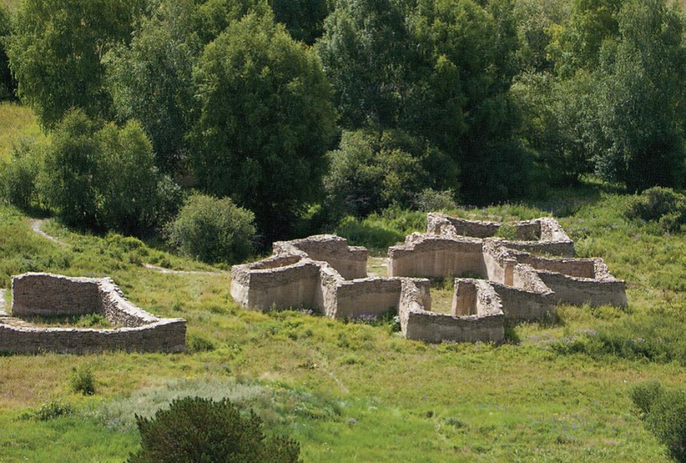
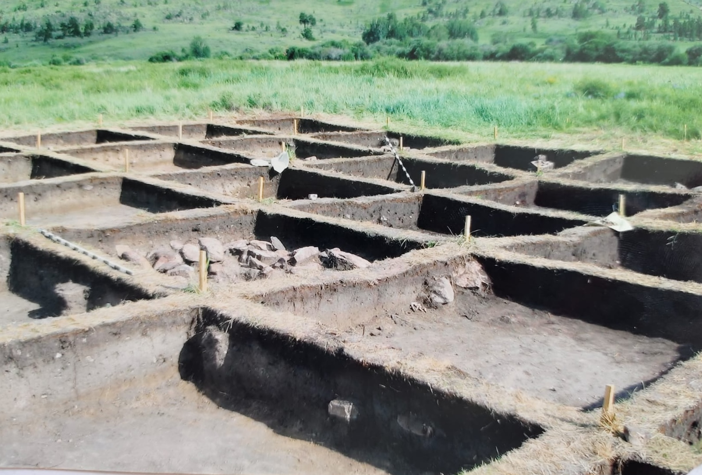

Интерактивная карта
Маршрут по территории древнего протогорода (площадь 30 га).
Хронология развития
XIII–IX вв. до н.э.
Расцвет Кента
Функционирование поселения как крупного протогородского центра бронзового века.

IX–VIII вв. до н.э.
Угасание жизни
Постепенное снижение активности и оставление поселения жителями.
Средние века
Зимнее пастбище
Использование долины Кызылкеныш как сезонных сельскохозяйственных угодий.
XVI–XVII вв.
Кызыл-Кентский дворец
Строительство архитектурного комплекса (по одной из версий — памятника джунгарской эпохи).

XIX век
Первые упоминания
Появление первых письменных свидетельств о развалинах в долине.
1984 год
Открытие городища
Обнаружение поселения археологами Карагандинского университета.

1985–2012 гг.
Систематические раскопки
Многолетние исследования под руководством археолога В.В. Варфоломеева.
2017 год
Издание монографии
Публикация фундаментального труда «Кент – город бронзового века в центре Казахских степей».